Pornichet 2006

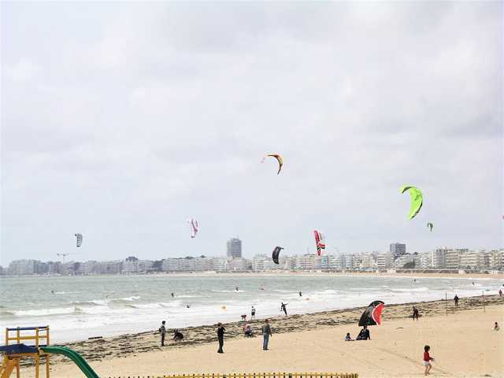
Arrivée vendredi soir à Pornichet. Temps sombre et brumeux, et beaucoup de kite-surfers dans un vent solide !

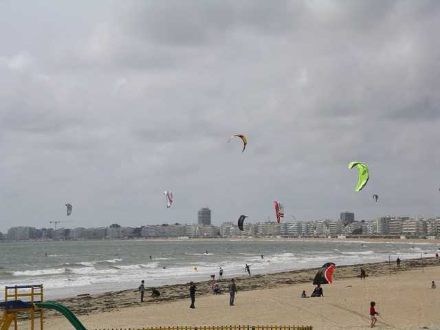
Et encore, j'ai arrangé la photo, c'était plutôt comme ça !

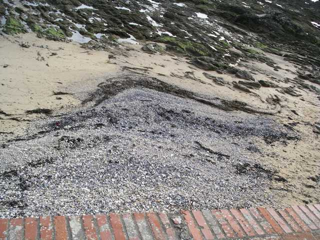
De plus, c'est l'époque de très grandes marées d'équinoxe. La plage est encombrée d'algues, ça sent l'iode et ça fait des beaux dessins ! Mais aussi la plage "utile" se rétrécira comme peau de chagrin vers 16h30, l'heure où on en aurait le plus besoin...

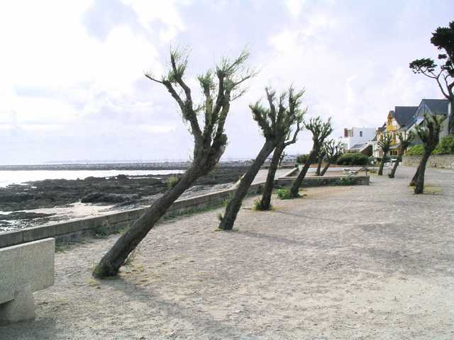
Quant au vent, il soufflera fort le premier jour, mais s'adoucira par la suite, et viendra toujours de la mer, bien lisse.

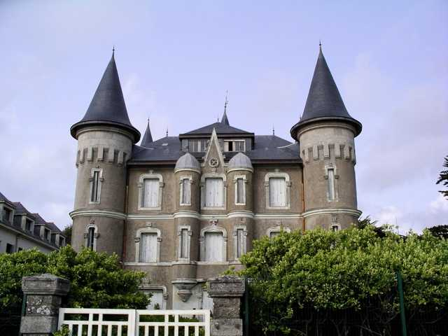
Un petit tour dans les vieux quartiers pour admirer (?) ce prétentieux château en béton et pierre, un peu à l'abandon !

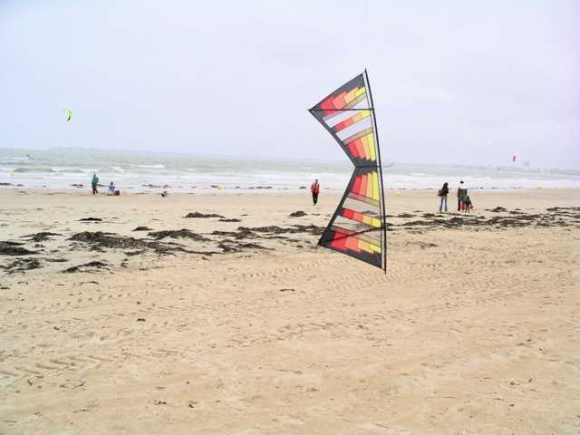
Mais dès le matin, les cerfs-volistes prennent position, les pilotables commencent à s'échauffer et à répéter !

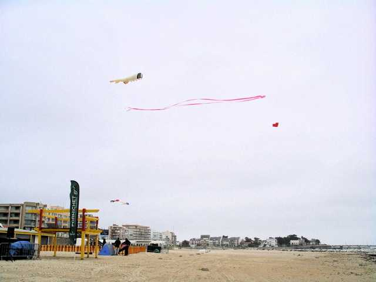
A gauche de la plage, les anglais d'AKF (Avon Kite Flyers) déploient leur ménagerie progressivement. Les AWITA viendront compléter la catégorie des lourds plus tard.

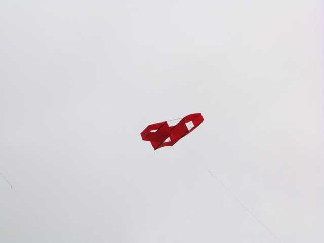
On observe ce rare Pomorzef (?) à boîte centrale reculée, et dont les cellules latérales sont biaisées pour améliorer la stabilité.

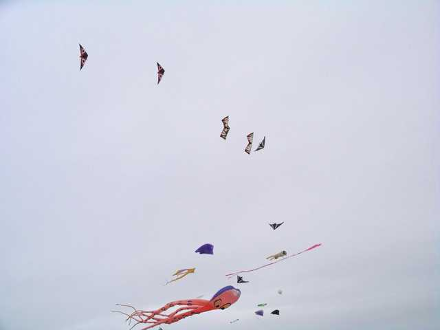
L'après-midi, on lance même un mégateam. Faute de combattants en nombre impressionnant, on forme un team mixte avec des révos ! De face, ça le fait pas mal, mais de 3/4, c'est moyen car ils ont des lignes beaucoup plus courtes, et on les voit décalés sans bien situer leur place dans le team...

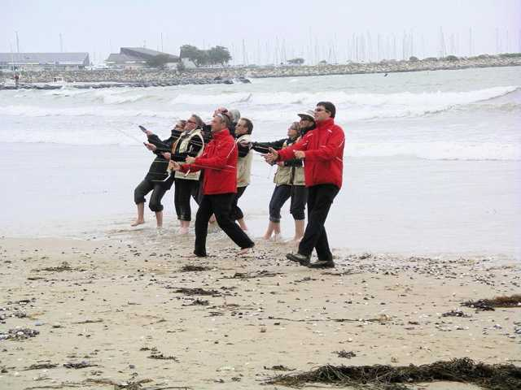
Comme la plage se rétrécit de plus en plus, les pilotes prudents ont enlevé avec raison leurs chaussures, sauf le dernier à droite, prévoyant, qui s'est décalé pour ne pas se mouiller !

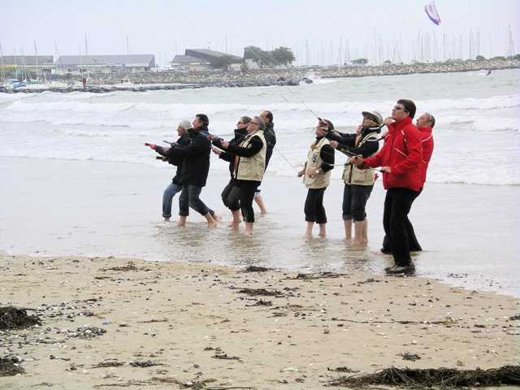
Manque de bol, la mer monte et les cerfs-volistes reculent, et ce qui devait arriver arrive !

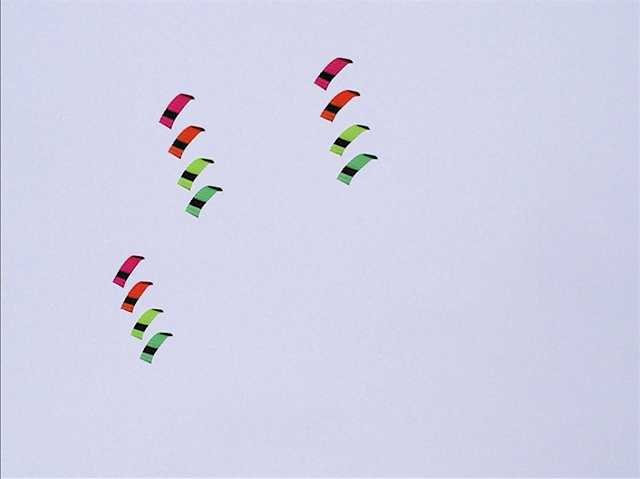
Le team Impossible assurera de belles prestations avec ses cerfs-volants habituels et aussi avec des trains de flexis qui remplissent bien l'espace...

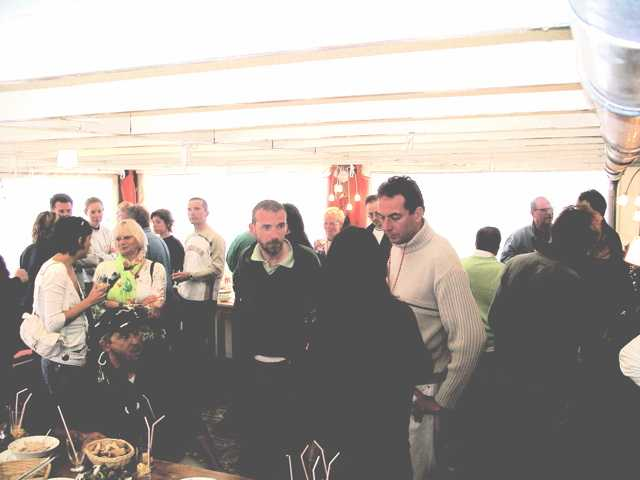
Le soir, pot puis repas chez "Julo le Bulot". Le pot est sympa, avec... des bulots, plein de bulots, et du pâté délicieux et de la confiture oignons-raisins de Corinthe succulente ! Tout juste si on encore faim au moment de passer à table !

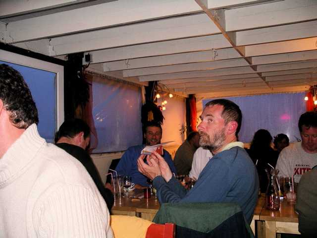
Evidemment, au dessert, les napperons en papier servent à la construction aéronautique... Les enfants courent comme des fous pour les ramasser et les relancer !

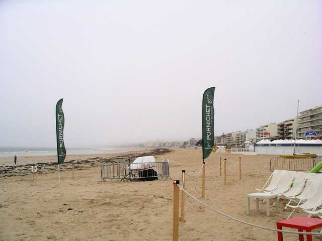
Le lendemain matin, la brume arrive de la mer, et vient cacher les immeubles, entre les bannières de Pornichet qui mettent une gaie touche de couleur pour nous remonter le moral...

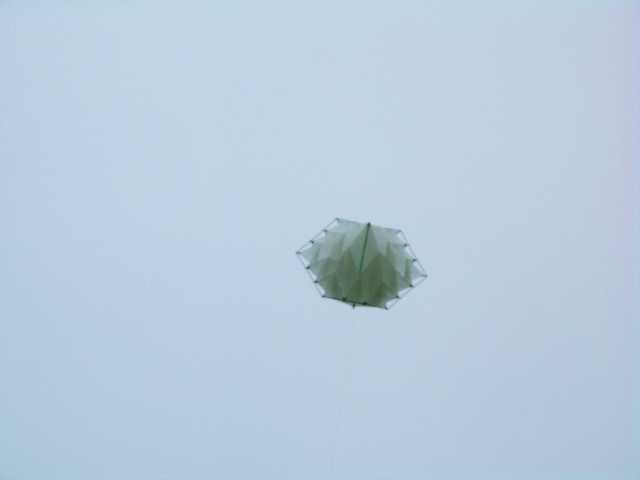
Même côté gonflables, on verra quelques vrais cerfs-volants comme ce flocon blanc, tout à fait dans l'ambiance...

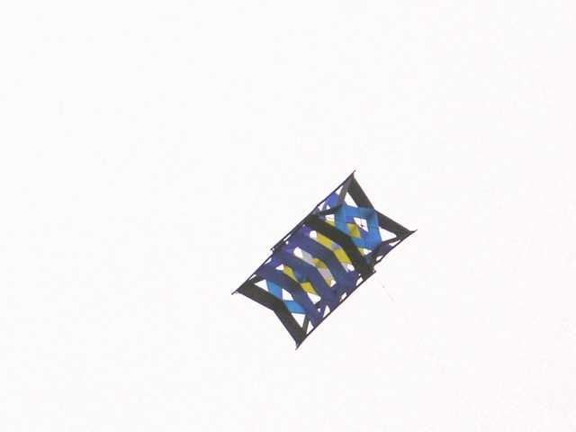
Ou ce cellulaire soigné et très aéré...

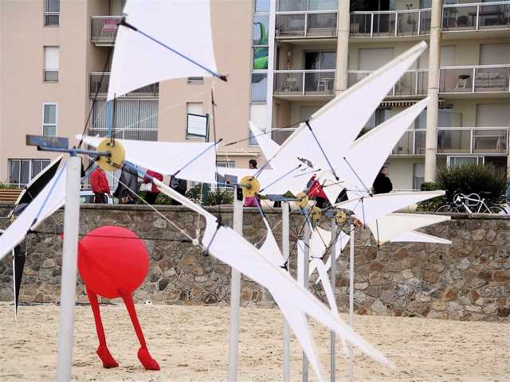
Les Flics sont arrivés, et ont décidé (en plus), de se lancer dans un JdV d'éoliennes.

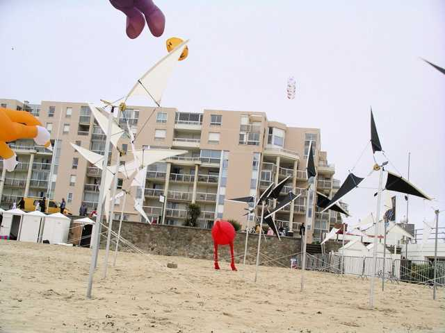
Il y en a un paquet, des blanches et des noires. Celle qui vibre a été cousue par le chef lui-même...

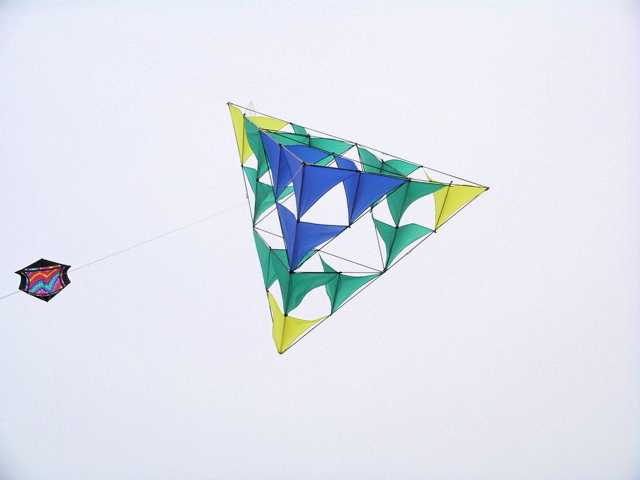
Plus loin, un Bell, pas 20 000 cellules mais quand même. Il a un peu de mal à voler droit, l'humidité détendant les toiles...

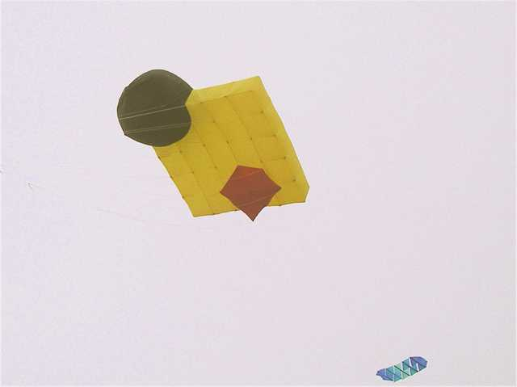
Ce gonflable bizarre vole très bien et est bien gonflé, même la boule. On verra dans le même genre une molécule chimique avec ses sphères accolées...

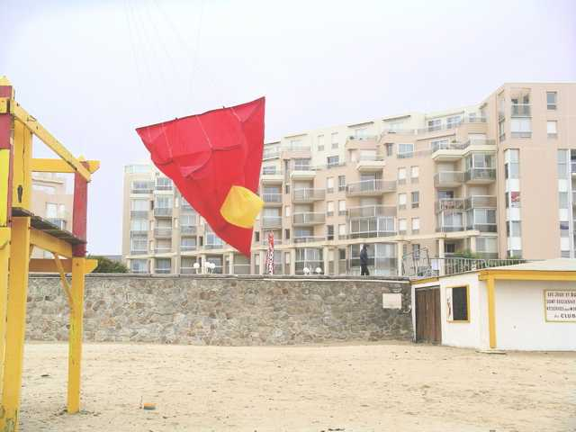
Et derrière, cette queue au style aussi déjanté...

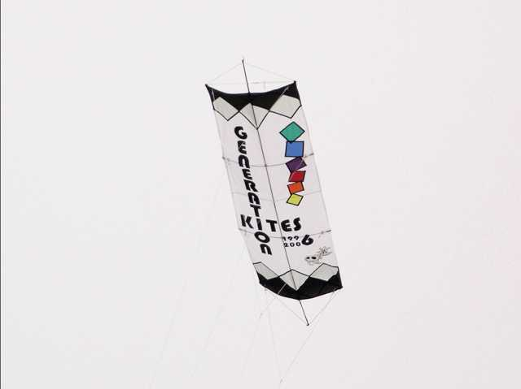
Ce grand cerf-volant allongé commémore le dixième anniversaire de Génération Kite...

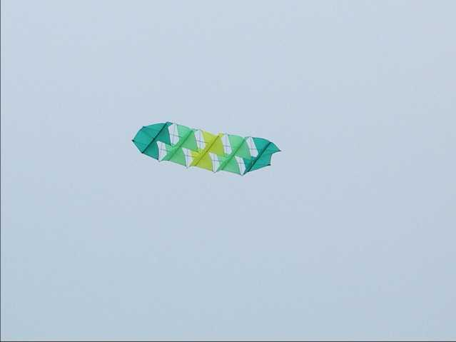
Ce beau Pellybox transversal compte 4 cellules ! Il volera toute la journée...

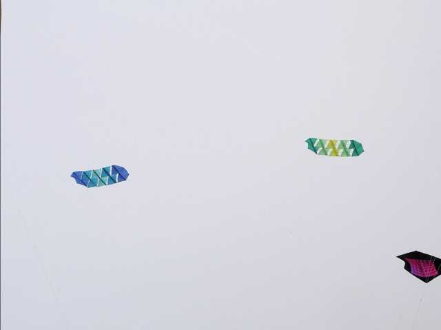
En fait le propriétaire, un membre d'AKF, je pense, en possède deux, similaires mais diversement colorés... Je ne sais pas s'ils sont courbés volontairement, ou si c'est un effet de l'humidité ou du vent fort...

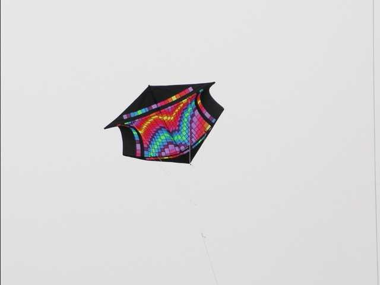
Un classique toujours renouvelé, ce rokkaku à la décoration irisée, encore un super travail de couture !

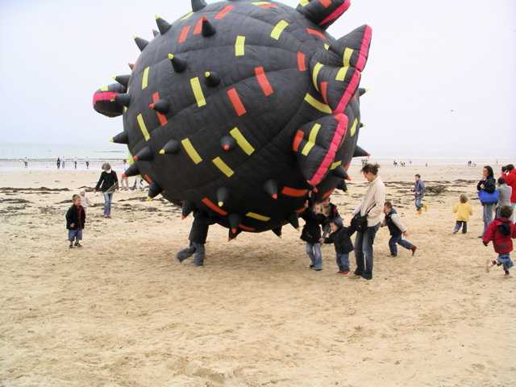
Comme d'habitude, les fugus attirent les enfants qui se font rouler dessus, passent dessous et tapent dedans. Les mamans viennent tâter pour voir si ce n'est pas dangereux, ou pour rassurer leurs petites filles...

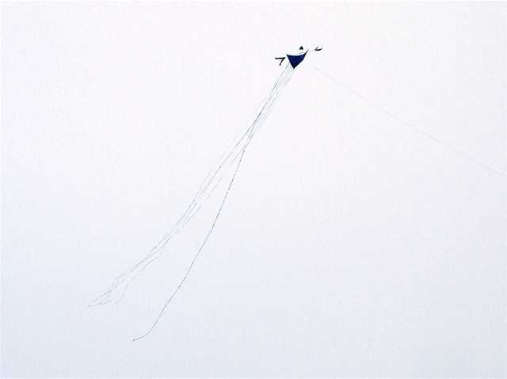
Maxime Fellion a sorti ses CVs très stylisés à la longue chevelure, en triangle...

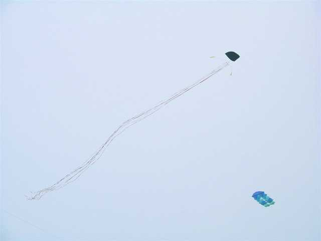
...ou en demi-cercle, avec toujours des barres, des plumes, des boules éventuellement ! Il fera aussi les commentaires au micro, avec un maximum de contrepèteries du style "le cerf-volant a été amené en Europe par un général qui est arrivé à pied par la Chine...".

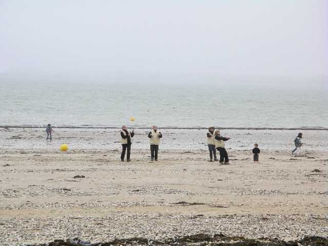
Impossible est reparti à l'assaut, toujours à quatre (sauf pour les Flexis...) maintenant que Julie est recollée de la clavicule !

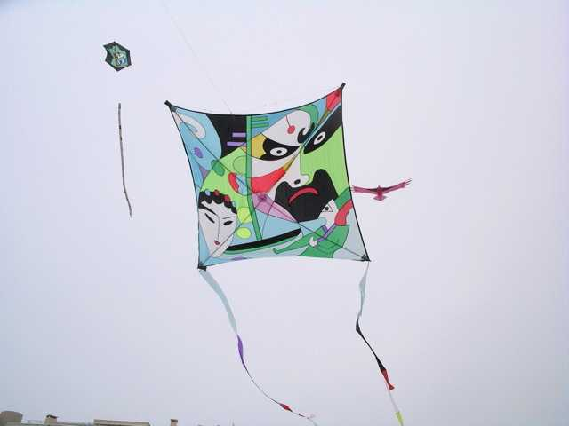
Jean présente ce beau carré au dessin plein de suggestions qui se recoupent. Il a un peu de mal à monter quand le vent force, le quart avant se pliant et créant plus de frein que de portance...

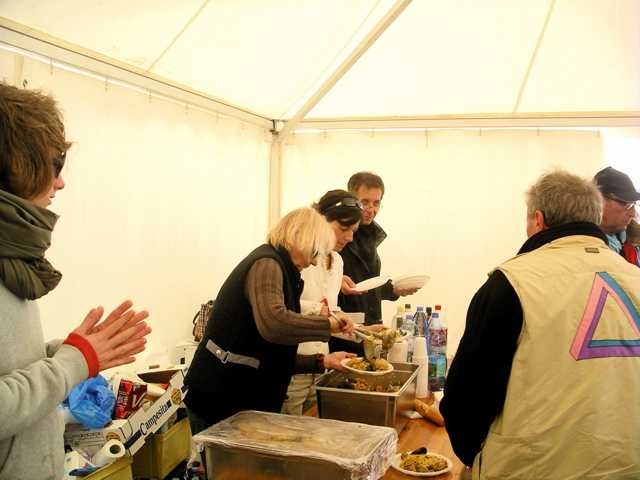
A midi, paella sous le barnum après le pot d'usage, Impossible n'est pas dernier....

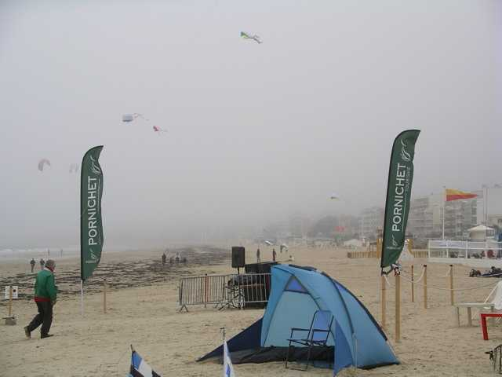
La brume est de plus en plus épaisse, limite brouillard, et même quelquefois des mini-gouttes de crachin...

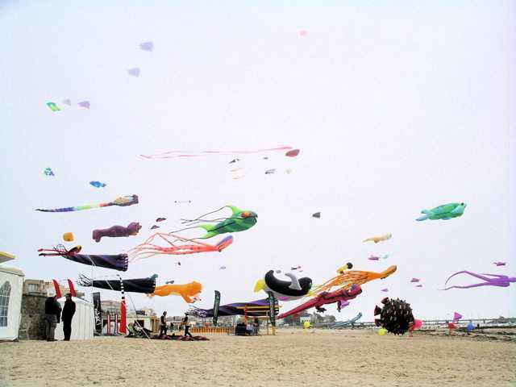
Mais ça n'empêche pas les cerfs-volants de voler, les anglais et AWITA remplissent bien l'espace de leur côté. Ca crée seulement une ambiance un peu tristounette...

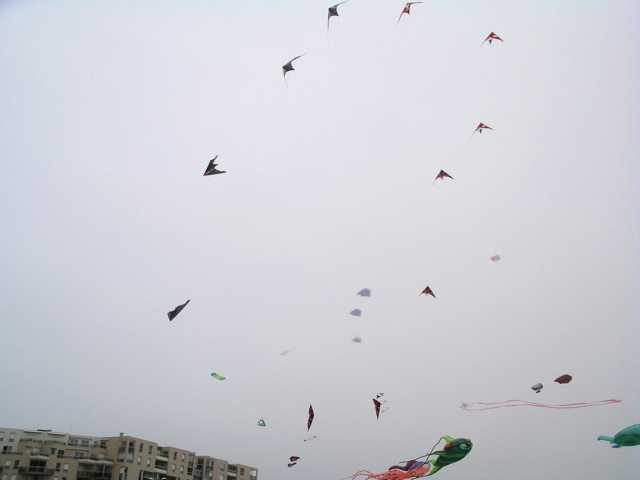
On relance un méga-team, cette fois, ils sont douze, ça devient sérieux ! Et Maxime les pousse du micro : "Et maintenant un Tour du Monde... et encore un !".

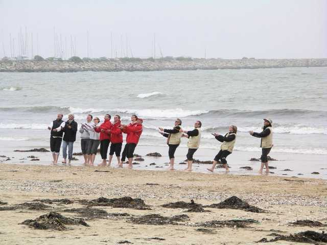
Evidemment, comme d'habitude, tout le monde s'est déchaussé pour évoluer dans la marée montante. Mais il y a un peu beaucoup de coquillages laissés par la marée précédente...

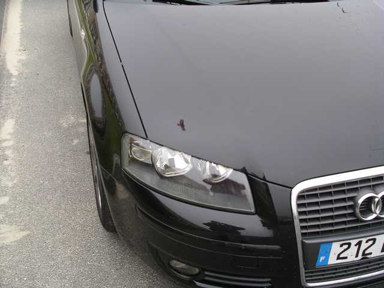
Côté public, la voiture d'Axel brille comme un sou neuf...

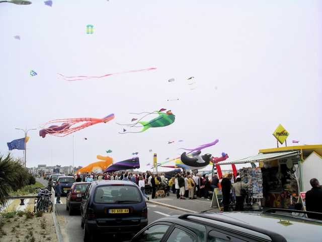
Le public, lui, est assez nombreux malgré la météo rébarbative et applaudit les teams, mais admire tout...

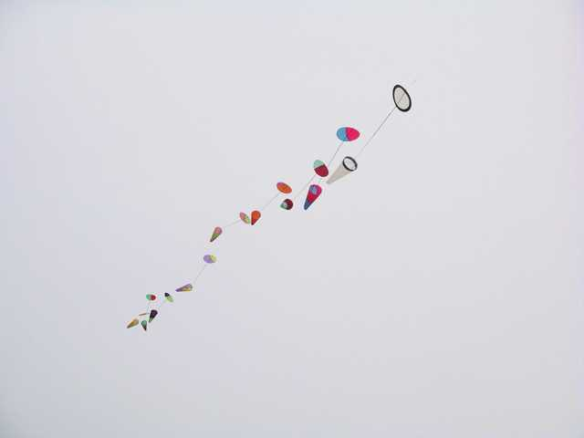
De notre côté, celui opposé aux gonflables, on est 3 : Moi, avec mon Albatros, mon Condor et Megoel, Yannick avec du Rokkaku, du Petillon et du Révo perso, et par roulement Jean ou Michel-Marie Bougard avec ses créations personnelles et inventives, comme ce train de ronds et de cônes, ou une création très pure de lames courbées et qui volera très bien une fois réglée.

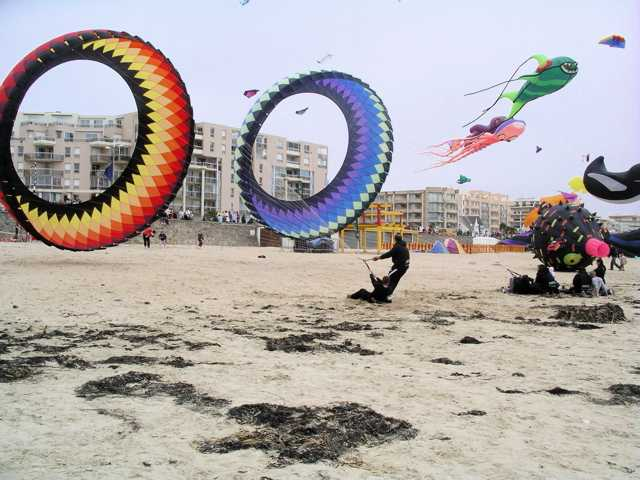
Profitant d'une accalmie dans les teams, les AWITA ont monté au centre de la plage 2 bols de 8 m, impressionnants !

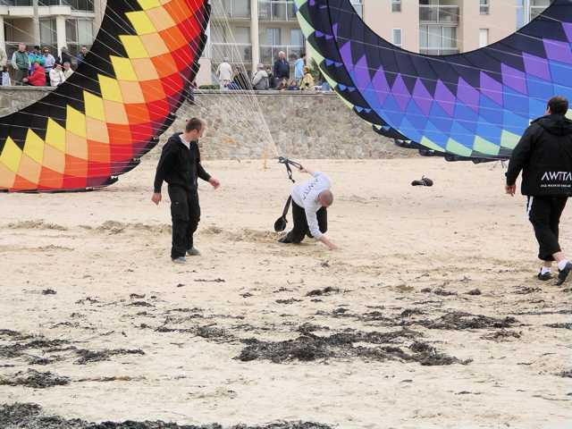
Mais ça tire d'enfer, et tout seul, on a du mal à remonter le vent, hein Nico ?

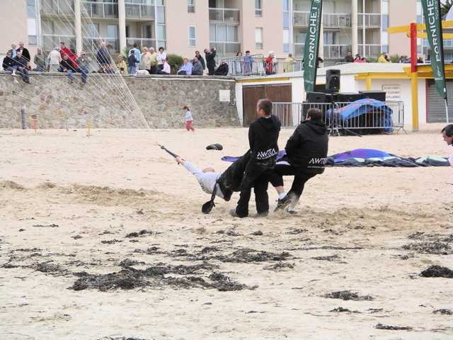
Heureusement ses petits camarades viennent gentiment lui prêter main-forte...

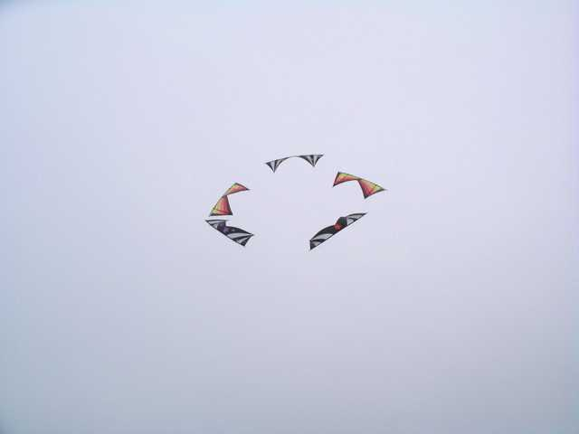
Les Flics ne sont pas tous venus, mais en regroupant les forces, on peut constituer un team intéressant et faire "la Grosse Boule"...

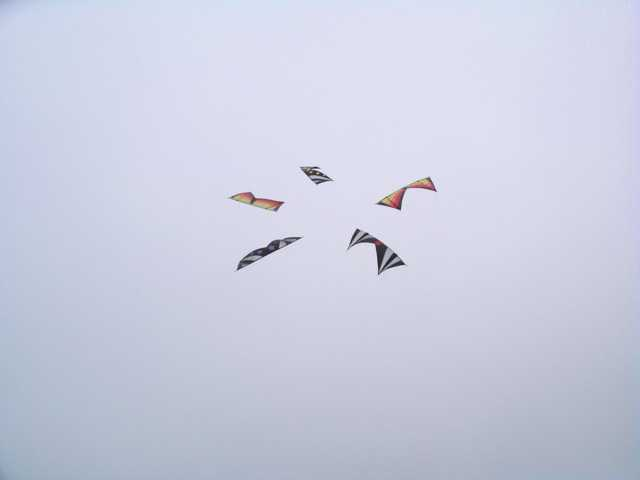
... avec sortie inclinée...

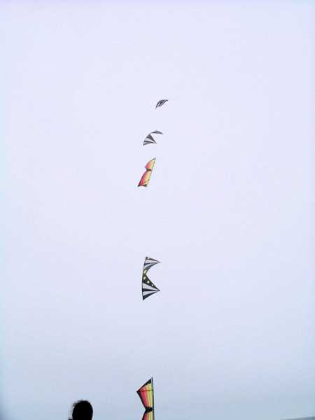
...ou une ligne verticale avec des demi-tours et des échanges continuels de haut en bas. Maxime tend son micro pour nous faire écouter les ordres pittoresques...

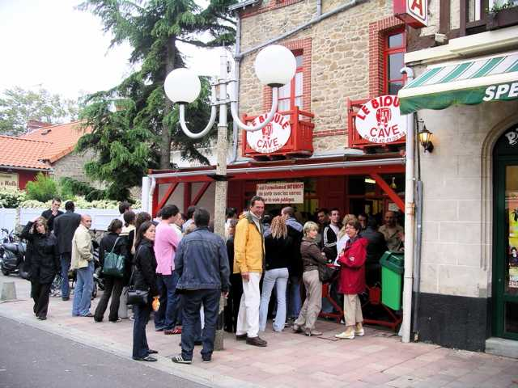
Le soir, rendez-vous au Bidule, une institution pornichaise, un must pour les jeunes, mais on n'est pas entrés, 2 h de queue et en se battant !

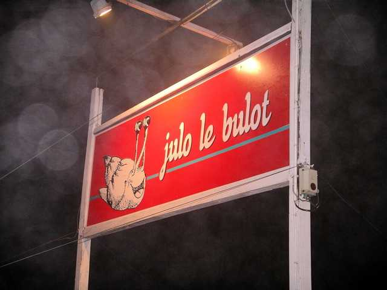
Alors on revient chez Julo le Bulot, on ne manquera quand même de rien à boire, ni de bulots, ni de pâté, ni de confiture d'oignon, on ne regrette rien...

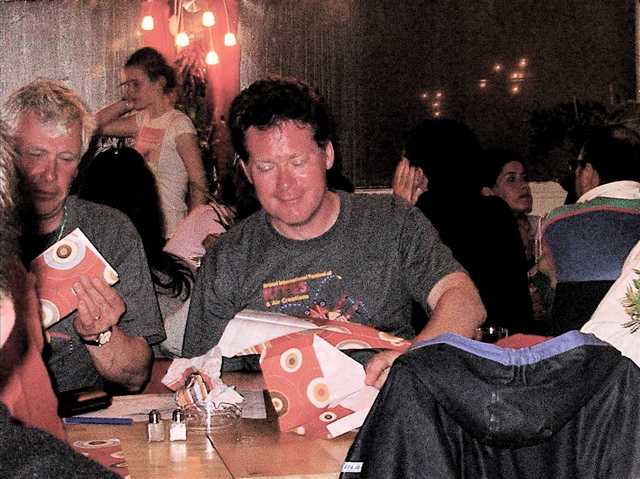
Les anglais auxquels les avions d'hier avaient bien plu sont repris la main dans le sac en pleine création...

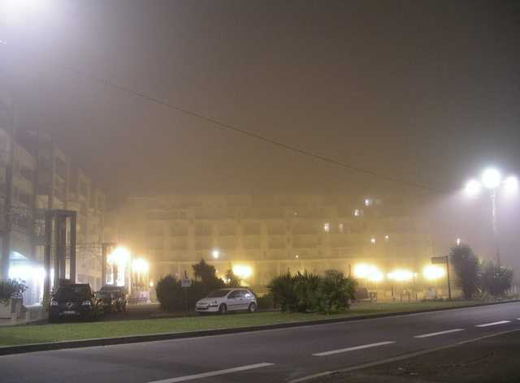
Le soir, en sortant de chez Julo, on est un peu dans le brouillard. Mais ça n'est pas seulement les libations généreusement fournies... Ca promet pour demain, et les promesses seront tenues, malheureusement !

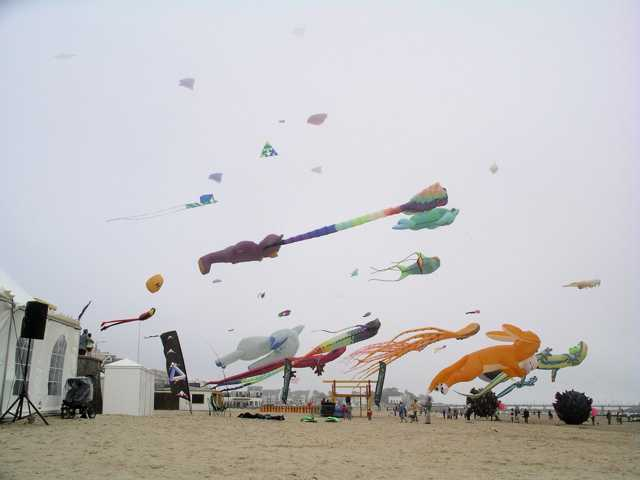
Bon, avec les traitements photos, je vous la fais quand même genre ensoleillée, c'est plus gai ! Tout le monde a remis son bazar en l'air...

Les AWITA empruntent un train de Flexis à Impossible pour un nouveau jeu qu'ils ont inventé : il faut sauter à travers le train piloté à ras du sol. Et ils y arrivent après un peu d'entraînement ! Ils font même des sauts groupés comme celui-ci particulièrement réussi ! De son côté, Maxime met de l'animation avec les combats de rokkaku, ou le concours de vitesse de montée. Mais en 30 secondes, la moitié des CVs a disparu dans le brouillard ! Il faudra les départager sur 15 secondes !

Côté gonflables, ce n'est pas la peine de monter trop haut, on ne verrait plus les cerfs-volants ! De toute façon, ça n'est pas leur vocation, alors ce n'est pas trop gênant !

Maxime et Michel-Marie font un petit vol en paire, je ne savais pas que Michel-Marie était si fort dans ce domaine ! Il est vrai qu'avec Maxime pour prof...

Alain a mis ses marconis en train pour montrer qu'il n'y a pas que des gonflables à voler...

Dédé a commis l'erreur de manger à côté des AWITA alors qu'il y a de la mousse au chocolat (excellente, d'ailleurs) au dessert. Il en sort un peu barbouillé...

Ca fait rire Blandine sans pitié, mais Lorane n'aime pas du tout ça !

Michel-Marie Bougard a sorti des cerfs-volants, une escouade noire et blanche de CVs semblables, mais avec des variations diverses.

Le dernier jour, le vent régulier et calme a permis de tout sortir, même la baleine d'AKF, quelquefois un peu agitée par vent plus turbulent !

La grande tortue s'est quand même fait prendre par les tentacules de la pieuvre qui la jettent au sol sans pitié...

Mais l'éléphant d'AWITA volera bien, on ne le voit pas souvent, ils l'ont fait eux-mêmes, il craint un peu et ça a été tellement de travail...
Bon, la météo n'a pas été très gaie, surtout qu'en partant, on trouvait du beau temps avec 3/4 de ciel bleu à 20 km... Mais on a eu du vent de mer, bien régulier, un peu fort le premier jour sans plus, pas trop froid, on a même pris des coups de soleil à travers la couche brumeuse, c'est traître ! Alors on reviendra, surtout qu'on aime bien l'organisation très inorg... euh... informelle, et l'équipe de Dominique !